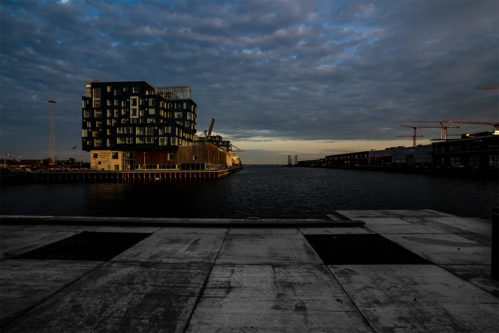

Eksempler på CSS Transitions

Dette billede flytter sig når musen føres henover det
.moving-image {
transition: transform 0.4s ease;
}
.moving-image:hover {
transform: translate(30px, -40px);
}
Her er en cirkel der lyser op, når musen føres henover den
.circle {
width: 75%;
aspect-ratio: 1/1;
border-radius: 50%;
background-color: rgb(62, 42, 15);
justify-self: center;
transition: all 0.5s ease;
}
.circle:hover {
background-color: #ebfc02;
filter: drop-shadow(0 0 35px #ffff01);
}
Dette billede roterer 90 grader, når musen flyttes henover det.
.rotating-image {
transition: transform 1s ease;
}
.rotating-image:hover {
transform: rotate(90deg);
}
Flyt musen henover billedet og aktiver filtrene
Her er CSS koden:
.image-filters {
transition: filter 1.2s ease;
}
.image-filters:hover {
filter: saturate(300%)
brightness(140%)
hue-rotate(20deg);
}